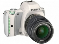
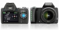

器材库 > APS及其以下画幅可换镜头数码相机 > K-S1

规格总览
产品类型
APS画幅可换镜头数码相机
发布日期
2014-08-28
厂家推荐价格
750.00 （美元）
影像规格
影像传感器
CMOS
影像传感器尺寸
23.5×15.6mm
总像素
2042万万
有效像素
2012万万
最大解像度
5472x3648
静态图像格式
JPEG, RAW, RAW+JPEG
静态图像质量
5472x3648
短片尺寸
1920 × 1080 / 30p
短片格式
MOV
镜头和对焦
镜头卡口
Pentax AF
对焦系统类型
TTL相位差异自动对焦
对焦点
11点对焦（中央9个对焦点为十字型）
AF辅助灯
有
手动对焦
支持
曝光控制
快门类型
电子控制，纵走式，焦平面快门
快门速度
1/6000秒～30秒、长时间曝光
ISO感光度
100, 51200
连拍
5.4fps
闪光灯
内置闪光灯
弹出式
取景器/显示屏
取景器
五棱镜取景器
取景范围
100%
取景放大倍率
约0.95倍倍
LCD尺寸
3.0英寸
LCD像素
92.1万万
视野率
100%%
Live View
有
文件输入/输出
存储卡
SD/SDHC, SDXC
电源
电池
充电式锂离子电池D-LI109
机身规格
尺寸
约120mm（宽）×92.5mm（高）×69.5mm（厚）mm
重量
约498g(仅机身)g
该产品暂无存档的网友点评
产品图 / 样片

评测 / 相关文章
- 详细内容 （存档）
- 相机也能如此炫酷-宾得K-S1测评 （存档）
- ［试用］宾得K-S1单反实拍样张 （存档）
- ［资讯］宾得K-S1单反相机精美外观图赏 （存档）
- ［行情］甜品系列 宾得K-S1多彩相机全新上市 （存档）
- ［资讯］PENTAX K-S1甜品系列 （存档）
- ［资讯］小巧创新 PENTAX K-S1官方样片欣赏 （存档）
- ［资讯］彩色订制服务 宾得K-S1推出收藏版相机 （存档）
- ［资讯］设有LED机身灯 宾得正式发布K-S1单反相机 （存档）